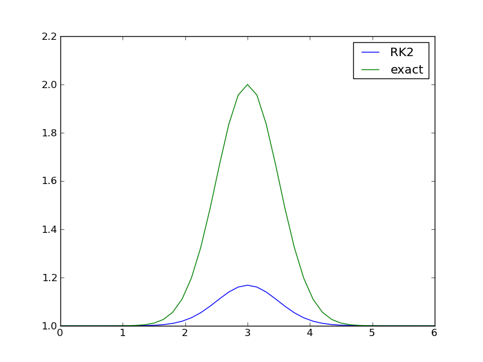

Figure 1: Solution of the logistic equation with the 4-th order Runge-Kutta method (solid line) and comparison with the exact solution (dots).

The Odespy package makes it easy to specify an ODE problem in Python and get it solved by a wide variety of different numerical methods and software.
The Odespy package grew out of the desire to have a unified interface to lots of different methods and software for ODEs. Consider the ODE problem $$ y'' = 3 (1 - y^2) y' - y,\quad y(0)=2,\ y'(0)=1, $$ known as the van der Pool oscillator. The solution is desired at 150 equally spaced time levels in the interval [0, 30].
We want to solve this problem by three well-known routines:
The mentioned ODE software needs a specification of the \( f(u,t) \) formulas through some user-written function that takes \( u \) and \( t \) as input and delivers the vector \( f \) as output.
Application of LSODE and other ODEPACK routines requires the ODE problem to be specified in FORTRAN and the solver to be called from FORTRAN:
PROGRAM MAIN
EXTERNAL F
INTEGER I, IOPT, IOUT, ISTATE, ITASK, ITOL, IWORK,
1 LRW, LIW, MF, NEQ, NOUT
DOUBLE PRECISION ATOL, T, TOUT, RTOL, RWORK, U, URR
DIMENSION U(2), RWORK(52), IWORK(20), U1(5), U2(5)
NEQ = 2
C SET ADAMS METHOD:
MF = 10
C LET TOLERANCES BE SCALARS (NOT ARRAYS):
ITOL = 1
C USE ONLY ABSOLUTE TOLERANCE:
RTOL = 0.0D0
ATOL = 1.0D-6
LRW = 52
LIW = 20
C NUMBER OF TIME STEPS:
NOUT = 150
C FINAL TIME:
TOUT = 30.0D0
C INITIAL CONDITIONS
T = 0.0D0
U(1)= 2.0D0
U(2) = 0.0D0
ITASK = 1
ISTATE = 1
C CALL ADAPTIVE TIME STEPPING AT EACH OF THE TARGET TIME LEVELS
DO 100 IOUT = 1, NOUT
CALL DLSODE(F,NEQ,U,T,TOUT,ITOL,RTOL,ATOL,ITASK,
1 ISTATE,IOPT,RWORK,LRW,IWORK,LIW,JAC,MF)
U1(IOUT) = U(1)
U2(IOUT) = U(2)
TOUT = TOUT + 2.0D-1
100 CONTINUE
END
SUBROUTINE F(NEQ, T, U, UDOT)
INTEGER NEQ
DOUBLE PRECISION T, U, UDOT
DIMENSION U(2), UDOT(2)
UDOT(1) = U(2)
UDOT(2) = 3.0D0*(1.0D0 - U(1)*U(1))*U(2) - U(1)
RETURN
END
The problem can be solved with very compact code in MATLAB. The definition of the ODE system, the \( f(u,t) \) function, is placed in a function in a file, say myode.m:
function F = myode(t, u);
F(1,1) = u(2)
F(2,1) = 3*(1 - u(1)*u(1))*u(2) - u(1)
In MATLAB we can then solve the problem by
>> options = odeset('RelTol',0.0,'AbsTol',1e-6);
>> tspan = [0 30];
>> u0 = [2; 0]
>> [t, u] = ode45('myode', tspan, u0, options]);
Calling up the vode method from the scipy library in Python also results in fairly compact code:
def f(t, u):
return [u[1], 3.*(1. - u[0]*u[0])*u[1] - u[0]]
from scipy.integrate import ode
r = ode(f).set_integrator('vode', method='adams',
order=10, rol=0, atol=1e-6,
with_jacobian=False)
u0 = [2.0, 0.0]
r.set_initial_value(u0, 0)
T = 30
dt = T/150.
u = []; t = []
while r.successful() and r.t <= T:
r.integrate(r.t + dt)
u.append(r.y); t.append(r.t)
Suppose you want to compare these methods and their implementations. This requires three different main programs and (worse) three different implementations of the definition of the mathematical problem. Some specifications of \( f \) has the signature \( f(u,t) \) while others require \( f(t,u) \), and such differences between packages are often a cause of programming errors.
The Odespy package provides a unified interface to all the three mentioned types of methods, which makes it easy to run all of them in a loop (program motivation.py):
def f(u, t):
return [u[1], 3.*(1. - u[0]*u[0])*u[1] - u[0]]
u0 = [2.0, 0.0]
import odespy, numpy
for method in odespy.Lsode, odespy.DormandPrince, odespy.Vode:
solver = method(f, rtol=0.0, atol=1e-6,
adams_or_bdf='adams', order=10)
solver.set_initial_condition(u0)
t_points = numpy.linspace(0, 30, 150)
u, t = solver.solve(t_points)
Note in particular that the same f and the same call syntax can be reused across methods and the underlying software.
Odespy features a unified interface to the following collection of numerical methods and implementations:
The Odespy package is most easily installed by checking out the latest version of the source code:
git clone git@github.com:hplgit/odespy.git
cd odespy
The installation follows the standard procedure,
sudo python setup.py install
You will at least also need Python v2.7 and the numpy package. The FORTRAN codes rkc.f, rkf45.f, radau5.f, and ODEPACK comes with Odespy and are compiled and installed by setup.py.
The Odespy package depends on several additional packages:
These packages are readily downloaded and installed by the standard setup.py script, as shown above. On Ubuntu and other Debian-based Linux systems the following line installs all that Odespy may need:
sudo apt-get install python-scipy python-nose python-sympy \
python-matplotlib python-scitools python-pip
The odelab package is installed by either
pip install -e git+https://github.com/olivierverdier/odelab#egg=odelab
or downloading the source and running setup.py:
git clone git://github.com/olivierverdier/odelab.git
cd odelab
sudo python setup.py install
This section explains how to use Odespy. The general principles and program steps are first explained. Thereafter, we present a series of examples with progressive complexity with respect to Python constructs and numerical methods.
A code using Odespy to solve ODEs consists of six steps. These are outlined in generic form below.
Write the ODE problem in generic form \( u' = f(u, t) \), where \( u(t) \) is the unknown function to be solved for, or a vector of unknown functions of time in case of a system of ODEs.
Implement the right-hand side function \( f(u, t) \) as a Python function f(u, t). The argument u is either a float object, in case of a scalar ODE, or a numpy array object, in case of a system of ODEs. Some solvers in this package also allow implementation of \( f \) in FORTRAN for increased efficiency.
Create a solver object
solver = classname(f)
where classname is the name of a class in this package implementing the desired numerical method.
Many solver classes has a range of parameters that the user can set to control various parts of the solution process. The parameters are documented in the doc string of the class (pydoc classname will list the documentation in a terminal window). One can either specify parameters at construction time, via extra keyword arguments to the constructor,
solver = classname(f, prm1=value1, prm2=value2, ...)
or at any time using the set method:
solver.set(prm1=value1, prm2=value2, prm3=value3)
...
solver.set(prm4=value4)
Set the initial condition \( u(0)=U_0 \),
solver.set_initial_condition(U0)
where U0 is either a number, for a scalar ODE, or a sequence (list, tuple, numpy array), for a system of ODEs.
Solve the ODE problem, which means to compute \( u(t) \) at some discrete user-specified time points \( t_1, t_2, \ldots, t_N \).
T = ... # end time
time_points = numpy.linspace(0, T, N+1)
u, t = solver.solve(time_points)
In case of a scalar ODE, the returned solution u is a one-dimensional numpy array where u[i] holds the solution at time point t[i]. For a system of ODEs, the returned u is a two-dimensional numpy array where u[i,j] holds the solution of the \( j \)-th unknown function at the \( i \)-th time point t[i] (\( u_j(t_i) \) in mathematics notation).
By giving the parameter disk_storage=True to the solver's constructor, the returned u array is memory mapped (i.e., of type numpy.memmap) such that all the data are stored on file, but parts of the array can be efficiently accessed.
The time_points array specifies the time points where we want the solution to be computed. The returned array t is the same as time_points. The simplest numerical methods in the Odespy package apply the time_points array directly for the time stepping. That is, the time steps used are given by
time_points[i] - time_points[i-1] # i=0,1,...,len(time_points)-1
The adaptive schemes typically compute between each time point in the time_points array, making this array a specification where values of the unknowns are desired.
The solve method in solver classes also allows a second argument, terminate, which is a user-implemented Python function specifying when the solution process is to be terminated. For example, terminating when the solution reaches an asymptotic (known) value a can be done by
def terminate(u, t, step_no):
# u and t are arrays. Most recent solution is u[step_no].
tolerance = 1E-6
return abs(u[step_no] - a) < tolerance
u, t = solver.solve(time_points, terminate)
The arguments transferred to the terminate function are the solution array u, the corresponding time points t, and an integer step_no reflecting the most recently computed u value. That is, u[step_no] is most recently computed value of \( u \). (The array data u[step_no+1:] will typically be zero as these are uncomputed future values.)
Extract solution components for plotting and further analysis. Since the u array returned from solver.solve stores all unknown functions at all discrete time levels, one usually wants to extract individual unknowns as one-dimensional arrays. Here is an example where unknown number \( 0 \) and \( k \) are extracted in individual arrays and plotted:
u_0 = u[:,0]
u_k = u[:,k]
from matplotlib.pyplot import plot, show
plot(t, u_0, t, u_k)
show()
Our first example concerns the simple scalar ODE problem \( u'=au(1-u/R) \), \( u(0)=A \), where \( A>0 \), \( a>0 \), and \( R>0 \) are known constants. This is a common model for population dynamics in ecology where \( u \) is the number of individuals, \( a \) the initial growth rate, \( R \) is the maximum number of individuals that the environment allows (the so-called carrying capacity of the environment).
Using a standard Runge-Kutta method of order four, the code for solving the problem in the time interval \( [0,10] \) with \( N=30 \) time steps, looks like this (program logistic1.py):
def f(u, t):
return a*u*(1 - u/R)
a = 2
R = 1E+5
A = 1
import odespy
solver = odespy.RK4(f)
solver.set_initial_condition(A)
from numpy import linspace, exp
T = 10 # end of simulation
N = 30 # no of time steps
time_points = linspace(0, T, N+1)
u, t = solver.solve(time_points)
With the RK4 method and other non-adaptive methods the time steps are dictated by the time_points array. A constant time step of size is implied in the present example. Running an alternative numerical method just means replacing RK4 by, e.g., RK2, ForwardEuler, BackwardEuler, AdamsBashforth2, etc.
We can easily plot the numerical solution and compare with the exact solution (which is known for this equation):
def u_exact(t):
return R*A*exp(a*t)/(R + A*(exp(a*t) - 1))
from matplotlib.pyplot import *
plot(t, u, 'r-',
t, u_exact(t), 'bo')
savefig('tmp.png')
show()
Figure 1: Solution of the logistic equation with the 4-th order Runge-Kutta method (solid line) and comparison with the exact solution (dots).
All the examples in this tutorial are found in the GitHub directory https://github.com/hplgit/odespy/tree/master/doc/src/odespy/src-odespy/. If you download the tarball or clone the GitHub repository, the examples reside in the directory doc/src/odespy/src-odespy.
The right-hand side function and all physical parameters are often lumped together in a class, for instance,
class Logistic:
def __init__(self, a, R, A):
self.a = a
self.R = R
self.A = A
def f(self, u, t):
a, R = self.a, self.R # short form
return a*u*(1 - u/R)
def u_exact(self, t):
a, R, A = self.a, self.R, self.A # short form
return R*A*exp(a*t)/(R + A*(exp(a*t) - 1))
Note that introducing local variables like a and R, instead of using self.a and self.A, makes the code closer to the mathematics. This can be convenient when proof reading the implementation of complicated ODEs.
The numerical solution is computed by
import odespy
problem = Logistic(a=2, R=1E+5, A=1)
solver = odespy.RK4(problem.f)
solver.set_initial_condition(problem.A)
T = 10 # end of simulation
N = 30 # no of time steps
time_points = linspace(0, T, N+1)
u, t = solver.solve(time_points)
The complete program is available in the file program logistic2.py.
Instead of having the problem parameters a and R in the ODE as global variables or in a class, we may include them as extra arguments to f, either as positional arguments or as keyword arguments. Positional arguments can be sent to f via the constructor argument f_args (a list/tuple of variables), while a dictionary f_kwargs is used to transfer keyword arguments to f via the constructor. Here is an example on using keyword arguments:
def f(u, t, a=1, R=1):
return a*u*(1 - u/R)
A = 1
import odespy
solver = odespy.RK4(f, f_kwargs=dict(a=2, R=1E+5))
In general, a mix of positional and keyword arguments can be used in f:
def f(u, t, arg1, arg2, arg3, ..., kwarg1=val1, kwarg2=val2, ...):
...
solver = odespy.classname(f,
f_args=[arg1, arg2, arg3, ...],
f_kwargs=dict(kwarg1=val1, kwarg2=val2, ...))
# Alternative setting of f_args and f_kwargs
solver.set(f_args=[arg1, arg2, arg3, ...],
f_kwargs=dict(kwarg1=val1, kwarg2=val2, ...))
Solvers will call f as f(u, t, *f_args, **f_kwargs).
It is easy to simulate for some time interval \( [0, T_1] \), then continue with \( u(T_1) \) as new initial condition and simulate for \( t \) in \( [T_1, T_2] \) and so on. Let us divide the time domain into subdomains and compute the solution for each subdomain in sequence. The following program performs the steps (logistic4.py).
def f(u, t, a=1, R=1):
return a*u*(1 - u/R)
A = 1
import odespy, numpy
from matplotlib.pyplot import plot, hold, show, axis
solver = odespy.RK4(f, f_kwargs=dict(a=2, R=1E+5))
# Split time domain into subdomains and
# integrate the ODE in each subdomain
T = [0, 1, 4, 8, 12] # subdomain boundaries
N_tot = 30 # total no of time steps
dt = float(T[-1])/N_tot # time step, kept fixed
u = []; t = [] # collectors for u and t in each domain
for i in range(len(T)-1):
T_interval = T[i+1] - T[i]
N = int(round(T_interval/dt))
time_points = numpy.linspace(T[i], T[i+1], N+1)
solver.set_initial_condition(A) # at time_points[0]
print 'Solving in [%s, %s] with %d intervals' % \
(T[i], T[i+1], N)
ui, ti = solver.solve(time_points)
A = ui[-1] # newest ui value is next initial condition
plot(ti, ui)
hold('on')
u.append(ui); t.append(ti)
axis([0, T[-1], -0.1E+5, 1.1E+5])
# Can concatenate all the elements of u and t, if desired
u = numpy.concatenate(u); t = numpy.concatenate(t)
savefig('tmp.png')
We know that the solution \( u \) of the logistic equation approaches \( R \) as \( t\rightarrow\infty \). Instead of using a trial and error process for determining an appropriate time integral for integration, the solver.solve method accepts a user-defined function terminate that can be used to implement a criterion for terminating the solution process. Mathematically, the relevant criterion is \( ||u-R||<\hbox{tol} \), where tol is an acceptable tolerance, say \( 100 \) in the present case where \( R=10^5 \). The terminate function implements the criterion and returns true if the criterion is met:
def terminate(u, t, step_no):
"""u[step_no] holds (the most recent) solution at t[step_no]."""
return abs(u[step_no] - R) < tol:
Note that the simulation is anyway stopped for \( t > T \) so \( T \) must be large enough for the termination criterion to be reached (if not, a warning will be issued). With a terminate function it is also convenient to specify the time step dt and not the total number of time steps.
A complete program can be as follows (logistic5.py):
def f(u, t):
return a*u*(1 - u/R)
a = 2
R = 1E+5
A = 1
import odespy, numpy
solver = odespy.RK4(f)
solver.set_initial_condition(A)
T = 20 # end of simulation
dt = 0.25
N = int(round(T/dt))
time_points = numpy.linspace(0, T, N+1)
tol = 100 # tolerance for termination criterion
def terminate(u, t, step_no):
"""u[step_no] holds (the most recent) solution at t[step_no]."""
return abs(u[step_no] - R) < tol:
u, t = solver.solve(time_points, terminate)
print 'Final u(t=%g)=%g' % (t[-1], u[-1])
from matplotlib.pyplot import *
plot(t, u, 'r-')
savefig('tmp.png')
show()
The previous code example can be recast into a more class-based ("object-oriented programming") example. We lump all data related to the problem (the "physics") into a problem class Logistic, while all data related to the numerical solution and its quality are taken care of by class Solver. The code below illustrates the ideas (logistic6.py):
import numpy as np
import matplotlib.pyplot as mpl
import odespy
class Logistic:
def __init__(self, a, R, A, T):
"""
`a` is (initial growth rate), `R` the carrying capacity,
`A` the initial amount of u, and `T` is some (very) total
simulation time when `u` is very close to the asymptotic
value `R`.
"""
self.a, self.R, self.A = a, R, A
self.tol = 0.01*R # tolerance for termination criterion
def f(self, u, t):
"""Right-hand side of the ODE."""
a, R = self.a, self.R # short form
return a*u*(1 - u/R)
def terminate(self, u, t, step_no):
"""u[step_no] holds solution at t[step_no]."""
return abs(u[step_no] - self.R) < self.tol
def u_exact(self, t):
a, R, A = self.a, self.R, self.A # short form
return R*A*np.exp(a*t)/(R + A*(np.exp(a*t) - 1))
class Solver:
def __init__(self, problem, dt, method='RK4'):
self.problem = problem
self.dt = dt
self.method_class = eval('odespy.' + method)
self.N = int(round(T/dt))
def solve(self):
self.solver = self.method_class(self.problem.f)
self.solver.set_initial_condition(self.problem.A)
time_points = np.linspace(0, self.problem.T, self.N+1)
self.u, self.t = self.solver.solve(
time_points, self.problem.terminate)
print 'Final u(t=%g)=%g' % (t[-1], u[-1])
def plot(self):
mpl.plot(self.t, self.u, 'r-',
self.t, self.u_exact(self.t), 'bo')
mpl.legend(['numerical', 'exact'])
mpl.savefig('tmp.png')
mpl.show()
def main():
problem = Logistic(a=2, R=1E+5, A=1, T=20)
solver = Solver(problem, dt=0.25, method='RK4')
solver.solve()
solver.plot()
if __name__ == '__main__':
main()
The Odespy package applies u for the unknown function or vector of unknown functions and t as the name of the independent variable. Many problems involve other symbols for functions and independent variables. These symbols should be reflected in the user's code. For example, here is a coding example involving the logistic equation written as \( y'(x)=au(x)(1-u(x)/R(x)) \), where now a variable \( R=R(x) \) is considered. Following the setup from the very first program above solving the logistic ODE, we can easily introduce our own nomenclature (logistic7.py):
def f(y, x):
return a*y*(1 - y/R)
a = 2; R = 1E+5; A = 1
import odespy, numpy
solver = odespy.RK4(f)
solver.set_initial_condition(A)
L = 10 # end of x domain
N = 30 # no of time steps
x_points = numpy.linspace(0, L, N+1)
y, x = solver.solve(x_points)
from matplotlib.pyplot import *
plot(x, y, 'r-')
xlabel('x'); ylabel('y')
show()
As shown, we use y for u, x for t, and x_points instead of time_points.
We shall now explain how to solve a system of ODEs using a scalar second-order ODE as starting point. The angle \( \theta \) of a pendulum with mass \( m \) and length \( L \) is governed by the equation (neglecting air resistance for simplicity) theta'' + c*sin(theta) = 0, with theta(0) = Theta and theta'(0) = 0. This problem must be expressed as a first-order ODE system if it is going to be solved by the tools in the Odespy package. Introducing omega as theta', we get the first equation as theta' = omega and the second as omega' = -c*sin(theta). The initial conditions are theta(0) = Theta and omega'(0) = 0.
Now the f function must return a list or array with the two right-hand side functions:
def f(u, t):
theta, omega = u
return [omega, -c*sin(theta)]
Note that when we have a system of ODEs with n components, the u object sent to the f function is an array of length n, representing the value of all components in the ODE system at time t. Here we extract the two components of u in separate local variables with names equal to what is used in the mathematical description of the current problem.
The initial conditions must be specified as a list:
solver = odespy.Heun(f)
solver.set_initial_condition([Theta, 0])
To specify the time points we here first decide on a number of periods (oscillations back and forth) to simulate and then on the time resolution of each period. Note that when \( \Theta \) is small we can replace \( \sin\theta \) by \( \theta \) and find an analytical solution \( \theta (t)=\Theta\cos\left(\sqrt{c}t\right) \) whose period is \( 2\pi/\sqrt{c} \). We use this expression as an approximation for the period also when \( \Theta \) is not small.
freq = sqrt(c) # frequency of oscillations when Theta is small
period = 2*pi/freq # the period of the oscillations
T = 10*period # final time
N_per_period = 20 # resolution of one period
N = N_per_period*period
time_points = numpy.linspace(0, T, N+1)
u, t = solver.solve(time_points)
The u returned from solver.solve is a two-dimensional array, where the columns hold the various solution functions of the ODE system. That is, the first column holds \( \theta \) and the second column holds \( \omega \). For convenience we extract the individual solution components in individual arrays:
theta = u[:,0]
omega = u[:,1]
from matplotlib.pyplot import *
plot(t, theta, 'r-')
savefig('tmp.png')
show()
The complete program is available in the file osc1a.py.
Looking at the plot reveals that the numerical solution has an alarming feature: the amplitude grows (indicating increasing energy in the system). Changing T to 28 periods instead of 10 makes the numerical solution explode. The increasing amplitude is a numerical artifact that some of the simple solution methods suffer from.
Figure 2: Heun's method used to simulate oscillations of a pendulum.

Using a more sophisticated method, say the 4-th order Runge-Kutta method, is just a matter of substituting Heun by RK4:
solver = odespy.RK4(f)
solver.set_initial_condition([Theta, 0])
freq = sqrt(c) # frequency of oscillations when Theta is small
period = 2*pi/freq # the period of the oscillations
T = 10*period # final time
N_per_period = 20 # resolution of one period
N = N_per_period*period
time_points = numpy.linspace(0, T, N+1)
u, t = solver.solve(time_points)
theta = u[:,0]
omega = u[:,1]
from matplotlib.pyplot import *
plot(t, theta, 'r-')
savefig('tmp.png')
show()
The amplitude now becomes constant in time as expected.
We shall now make a more advanced solver by extending the previous example. More specifically, we shall
Right-hand side functions with parameters can be handled by including extra arguments via the f_args and f_kwargs functionality, or by using a class where the parameters are attributes and an f method defines \( f(u,t) \). the section Parameters in the Right-Hand Side Function exemplifies the details. A minimal class representation of the right-hand side function in the present case looks like this:
class Problem:
def __init__(self, c, Theta):
self.c, self.Theta = float(c), float(Theta)
def f(self, u, t):
theta, omega = u; c = self.c
return [omega, -c*theta]
problem = Problem(c=1, Theta=pi/4)
It would be convenient to add an attribute period which holds an estimate of the period of oscillations as we need this for deciding on the complete time interval for solving the differential equations. An appropriate extension of class Problem is therefore
class Problem:
def __init__(self, c, Theta):
self.c, self.Theta = float(c), float(Theta)
self.freq = sqrt(c)
self.period = 2*pi/self.freq
def f(self, u, t):
theta, omega = u; c = self.c
return [omega, -c*theta]
problem = Problem(c=1, Theta=pi/4)
The second extension is to loop over many solvers. All solvers can be listed by
>>> import odespy
>>> methods = list_all_solvers()
>>> for method in methods:
... print method
...
AdamsBashMoulton2
AdamsBashMoulton3
AdamsBashforth2
...
Vode
lsoda_scipy
odefun_sympy
odelab
A similar function, list_available_solvers, returns a list of the names of the solvers that are available in the current installation (e.g., the Vode solver is only available if the comprehensive scipy package is installed). This is the list that is usually most relevant.
For now we explicitly choose a subset of the commonly available solvers:
import odespy
solvers = [
odespy.ThetaRule(problem.f, theta=0), # Forward Euler
odespy.ThetaRule(problem.f, theta=0.5), # Midpoint method
odespy.ThetaRule(problem.f, theta=1), # Backward Euler
odespy.RK4(problem.f),
odespy.MidpointIter(problem.f, max_iter=2, eps_iter=0.01),
odespy.LeapfrogFiltered(problem.f),
]
To see what a method is and its arguments to the constructor, invoke the doc string of the class, e.g., help(ThetaRule) inside a Python shell like IPython, or run pydoc odespy.ThetaRule in a terminal window, or invoke the Odespy API documentation.
It will be evident that the ThetaRule solver with theta=0 and theta=1 (Forward and Backward Euler methods) gives growing and decaying amplitudes, respectively, while the other solvers are capable of reproducing the constant amplitude of the oscillations of in the current mathematical model.
The loop over the chosen solvers may look like
N_per_period = 20
T = 3*problem.period # final time
import numpy
import matplotlib.pyplot as mpl
legends = []
for solver in solvers:
solver_name = str(solver) # short description of solver
print solver_name
solver.set_initial_condition([problem.Theta, 0])
N = N_per_period*problem.period
time_points = numpy.linspace(0, T, N+1)
u, t = solver.solve(time_points)
theta = u[:,0]
legends.append(solver_name)
mpl.plot(t, theta)
mpl.hold('on')
mpl.legend(legends)
mpl.savefig(__file__[:-3] + '.png')
mpl.show()
A complete program is available as osc2.py.
Figure 3: Comparison of methods for solving the ODE system for a pendulum.

We can extend this program to compute the error in each numerical solution for different time step sizes. Let results be a dictionary with the method name as key, containing two sub dictionaries dt and error, which hold a sequence of time steps and a sequence of corresponding errors, respectively. The errors are computed by subtracting the numerical solution from the exact solution,
theta_exact = lambda t: problem.Theta*numpy.cos(sqrt(problem.c)*t)
u, t = solver.solve(time_points)
theta = u[:,0]
error = numpy.abs(theta_exact(t) - theta)
The so-called L2 norm of the error array is a suitable scalar error measure (square root of total error squared and integrated, here numerically):
error_L2 = sqrt(numpy.sum(error**2)/dt)
where dt is the time step size.
Typical loops over solvers and resolutions look as follows (osc3.py):
try:
num_periods = int(sys.argv[1])
except IndexError:
num_periods = 8 # default
T = num_periods*problem.period # final time
results = {}
resolutions = [10, 20, 40, 80, 160] # intervals per period
import numpy
for solver in solvers:
solver_name = str(solver)
results[solver_name] = {'dt': [], 'error': []}
solver.set_initial_condition([problem.Theta, 0])
for N_per_period in resolutions:
N = N_per_period*num_periods
time_points = numpy.linspace(0, T, N+1)
u, t = solver.solve(time_points)
theta = u[:,0]
error = numpy.abs(theta_exact(t) - theta)
error_L2 = sqrt(numpy.sum(error**2)/N)
if not numpy.isnan(error_L2): # drop nan (overflow)
results[solver_name]['dt'].append(t[1] - t[0])
results[solver_name]['error'].append(error_L2)
Assuming the error to be of the form \( C\Delta t^r \), we can estimate \( C \) and \( r \) from two consecutive experiments to obtain a sequence of \( r \) values which (hopefully) convergences to a value that we can view as the empirical convergence rate of a method. Given the sequence of time steps and errors, a function in the scitools package automatically computes the sequence of \( r \) values:
# Analyze convergence
from scitools.convergencerate import OneDiscretizationPrm
pairwise_rates = OneDiscretizationPrm.pairwise_rates # short form
print '\n\nConvergence results for %d periods' % num_periods
for solver_name in results:
rates, C = pairwise_rates(results[solver_name]['dt'],
results[solver_name]['error'])
rates = ', '.join(['%.1f' % rate for rate in rates])
print '%-20s r: %s E_min=%.1E' % \
(solver_name, rates, min(results[solver_name]['error']))
With 4 periods we get
ThetaRule(theta=0) r: 4.2, 2.4, 1.7, 1.3 E_min=1.9E-01
LeapfrogFiltered r: 10.3, 0.3, 0.5, 0.7 E_min=1.8E-01
ThetaRule(theta=1) r: 0.2, 0.4, 0.6, 0.8 E_min=1.3E-01
ThetaRule r: 2.3, 2.0, 2.0, 2.0 E_min=2.1E-03
RK4 r: 4.0, 4.0, 4.0, 4.0 E_min=1.6E-07
Leapfrog r: 2.2, 2.0, 2.0, 2.0 E_min=2.1E-03
RK2 r: 2.3, 2.0, 2.0, 2.0 E_min=2.1E-03
MidpointIter r: 2.0, 1.0, 2.0, 2.0 E_min=2.1E-03
The rates of the Forward and Backward Euler methods (1st and 3rd line) have not yet converged to unity, as expected, while the 2nd-order Runge-Kutta method, Leapfrog, and the \( \theta \) rule with \( \theta =0.5 \) (ThetaRule with default value of theta) shows the expected \( r=2 \) value. The 4th-order Runge-Kutta holds the promise of being of 4th order, while the filtered Leapfrog method has slow convergence and a fairly large error, which is also evident in the previous figure.
Extending the time domain to 20 periods makes many of the simplest methods inaccurate and the rates computed on coarse time meshes are irrelevant. Also in this case, three of the methods are useless, while the others deliver their promised convergence rates (Forward Euler, i.e., ThetaRule with theta=0 is left out because of ridiculous results):
LeapfrogFiltered r: 63.7, 0.0, 0.1, 0.2 E_min=4.3E-01
ThetaRule(theta=1) r: 0.0, 0.1, 0.1, 0.3 E_min=3.8E-01
ThetaRule r: 3.7, 2.1, 2.0, 2.0 E_min=1.0E-02
RK4 r: 4.0, 4.0, 4.0, 4.0 E_min=8.0E-07
Leapfrog r: 0.5, 1.9, 2.0, 2.0 E_min=1.0E-02
RK2 r: 3.7, 2.1, 2.0, 2.0 E_min=1.0E-02
MidpointIter r: 1.8, 0.8, 1.9, 2.0 E_min=1.0E-02
Odespy features a module problems for defining ODE problems. There is a superclass Problem in this module defining what we expect of information about an ODE problem, as well as some convenience functions that are inherited in subclasses. A rough sketch of class Problem is listed here:
class Problem:
stiff = False # classification of the problem is stiff or not
complex_ = False # True if f(u,t) is complex valued
not_suitable_solvers = [] # list solvers that should be be used
short_description = '' # one-line problem description
def __init__(self):
pass
def __contains__(self, attr):
"""Return True if attr is a method in instance self."""
def terminate(self, u, t, step_number):
"""Default terminate function, always returning False."""
return False
def default_parameters(self):
"""
Compute suitable time_points, atol/rtol, etc. for the
particular problem. Useful for quick generation of test
cases, demos, unit tests, etc.
"""
return {}
def u_exact(self, t):
"""Implementation of the exact solution."""
return None
Subclasses of Problem typically implements the constructor, for registering parameters in the ODE and the initial condition, and a method f for defining the right-hand side. For implicit solution method we may provide a method jac returning the Jacobian of \( f(u,t) \) with respect to \( u \). Some problems may also register an analytical solution in u_exact. Here is an example of implementing the logistic ODE from the section First Example: Logistic Growth:
import odespy
class Logistic(odespy.problems.Problem):
short_description = "Logistic equation"
def __init__(self, a, R, A):
self.a = a
self.R = R
self.U0 = A
def f(self, u, t):
a, R = self.a, self.R # short form
return a*u*(1 - u/R)
def jac(self, u, t):
a, R = self.a, self.R # short form
return a*(1 - u/R) + a*u*(1 - 1./R)
def u_exact(self, t):
a, R, U0 = self.a, self.R, self.U0 # short form
return R*U0*numpy.exp(a*t)/(R + U0*(numpy.exp(a*t) - 1))
The stiff, complex_, and not_suitable_solvers class variables can just be inherited. Note that u_exact should work for a vector t so numpy versions of mathematical functions must be used.
The initial condition is by convention stored as the attribute U0 in a subclass of Problem, and specified as argument to the constructor.
Here are the typical steps when using such a problem class:
problem = Logistic(a=2, R=1E+5, A=1)
solver = odespy.RK4(problem.f)
solver.set_initial_condition(problem.U0)
u, t = solver.solve(time_points)
The problem class may also feature additional methods:
class MyProblem(odespy.problems.Problem)
...
def constraints(self, u, t):
"""Python function for additional constraints: g(u,t)=0."""
def define_command_line_arguments(self, parser):
"""
Initialize an argparse object for reading command-line
option-value pairs. `parser` is an ``argparse`` object.
"""
def verify(self, u, t, atol=None, rtol=None):
"""
Return True if u at time points t coincides with an exact
solution within the prescribed tolerances. If one of the
tolerances is None, return max computed error (infinity
norm). Return None if the solution cannot be verified.
"""
The module odespy.problems contains many predefined ODE problems.
The solvers used in the previous examples have all employed a constant time step \( \Delta t \). Many solvers available through the Odespy interface are adaptive in the sense that \( \Delta t \) is adjusted throughout the solution process to meet a prescribed tolerance for the estimated error.
Simple methods such as RK4 apply time steps
dt = time_points[k+1] - time_points[k]
while adaptive methods will use several (smaller) time steps than dt in each dt interval to ensure that the estimated numerical error is smaller than some prescribed tolerance. The estimated numerical error may be a rather crude quantitative measure of the true numerical error (which we do not know since the exact solution of the problem is in general not known).
Some adaptive solvers record the intermediate solutions in each dt interval in arrays self.u_all and self.t_all. Examples include RKFehlberg, Fehlberg, DormandPrince, CashKarp, and BogackiShampine. Other adaptive solvers (Vode, Lsode, Lsoda, RKC, RKF45, etc.) do not give access to intermediate solution steps between the user-given time points, specified in the solver.solve call, and then we only have access to the solution at the user-given time points as returned by this call. One can run if solver.has_u_t_all() to test if the solver.u_all and solver.t_all arrays are available. These are of interest to see how the adaptive strategy works between the user-specified time points.
We consider the ODE problem for testing adaptive solvers: \( u' = -(u-1)(t-c)/s^2 \). The exact solution is a Gaussian function, $$ u(t) = 1 + \exp{\left(-\frac{1}{2}\left(\frac{t-c}{s}\right)^2\right)} $$ centered around \( t=c \) and width characteristic width ("standard deviation") \( s \). The initial condition is taken as the exact \( u \) at \( t=0 \).
Since the Gaussian function is significantly different from zero only in the interval \( [c-3s, c+3s] \), one may expect that adaptive methods will efficiently take larger steps when \( u \) is almost constant and increase the resolution when \( u \) changes substantially in the vicinity of \( t=c \). We can test if this is the case with several solvers.
Let us first use a simple standard method like the 2nd- and 4th-order Runge-Kutta methods with constant step size. With the former method (RK2), \( c=3 \), \( s=0.5 \), and \( 41 \) uniformly distributed points, the discrepancy between the numerical and exact solution in Figure 4 is substantial. Increasing the number of points by a factor of 10 gives a solution much closer to the exact one, and switching to the 4th-order method (RK4) makes the curves visually coincide. The problem is therefore quite straightforward to solve using a sufficient number of points (400) and a higher-order method such as RK4. For curiosity we can mention that the ForwardEuler method produces a maximum value of 0.98 with 20,000 points and 0.998 with 200,000 points.

A simple program testing one numerical method goes as follows (gaussian1.py).
import odespy, numpy as np, matplotlib.pyplot as plt
center_point = 3
s = 0.5
problem = odespy.problems.Gaussian1(c=center_point, s=s)
npoints = 41
tp = np.linspace(0, 2*center_point, npoints)
method = odespy.RK2
solver = method(problem.f)
solver.set_initial_condition(problem.U0)
u, t = solver.solve(tp)
method = solver.__class__.__name__
print '%.4f %s' % (u.max(), method)
if solver.has_u_t_all():
plt.plot(solver.t_all, solver.u_all, 'bo',
tp, problem.u_exact(tp))
print '%s used %d steps (%d specified)' % \
(method, len(solver.u_all), len(tp))
else:
plt.plot(tp, solver.u, tp, problem.u_exact(tp))
plt.legend([method, 'exact'])
plt.savefig('tmp.png')
plt.show()
One of the most widely used general-purpose, adaptive methods for ODE problems is the Runge-Kutta-Fehlberg method of order (4,5). This method is available in three alternative implementations in Odespy: a direct Python version (RKFehlberg), a specialization of a generalized implementation of explicit adaptive Runge-Kutta methods (Fehlberg), and as a FORTRAN code (RKF45). We can try one of these,
method = odespy.Fehlberg
Figure 5 shows how Fehlberg with 40 intervals produces a solution of reasonable accuracy. The dots show the actual computational points used by the algorithm (57 adaptively selected points in time).
Figure 5: Adaptive Runge-Kutta-Fehlberg method with 57 points (starting with 41).

Adaptive algorithms apply an error estimate based on considering a higher-order method as exact, in this case a method of order 5, and a method of lower order (here 4) as the numerically predicted solution. The user can specify an error tolerance. In the program above we just relied to the default tolerance, which can be printed by
print solver.get()
yielding a list of all optional parameters:
{'f_kwargs': {}, 'f_args': (),
'max_step': 1.5000000000000036, 'verbose': 0,
'min_step': 0.0014999999999999946,
'first_step': 0.14999999999999999,
'rtol': 1e-06, 'atol': 1e-08,
'name of f': 'f', 'complex_valued': False,
'disk_storage': False, 'u_exact': None}
The tolerances involved are of relative and absolute type, i.e.,
estimated_error <= tol = rtol*abs(u) + atol
is the typical test on whether the solution is sufficiently. For very small u, atol comes into play, while for large u, the relative tolerance rtol dominates.
In this particular example, running RK4 with 57 equally spaced points yields a maximum value of 1.95, while Fehlberg with 57 adaptively selected points results in 1.98. Note that the tolerances used are \( 10^{-6} \) while the real error is of the order \( 10^{-2} \).
We can specify stricter tolerances and also control the minimum allowed step size, min_step, which might be too large to achieve the desired error level (gaussian2.py):
rtol = 1E-12
atol = rtol
min_step = 0.000001
solver = odespy.Fehlberg(problem.f, atol=atol, rtol=rtol,
min_step=min_step)
The Fehlberg solver now applies 701 points and achieves a maximum value of 2.00005. However, RK4 with the same number of (equally spaced) points achieves the same accuracy and is much faster.
We have already solved \eqref{gaussian:ode:eq} with sufficient accuracy, but let us see how other methods perform, as this will most likely result in a surprise. Below is a program (gaussian3.py) that compares several famous and widely used methods in the same plot.
import odespy, numpy as np, matplotlib.pyplot as plt
def run(problem, tp, solver):
method = solver.__class__.__name__
solver.set_initial_condition(problem.U0)
u, t = solver.solve(tp)
solver.u_max = u.max()
print '%.4f %s' % (solver.u_max, method)
if solver.has_u_t_all():
plt.plot(solver.t_all, solver.u_all)
print '%s used %d steps (%d specified)' % \
(method, len(solver.u_all), len(tp))
else:
plt.plot(solver.t, solver.u)
legend.append(method)
plt.hold('on')
rtol = 1E-6
atol = rtol
s = 0.5
npoints = 41
center_point = 3
problem = odespy.problems.Gaussian1(c=center_point, s=s)
tp = np.linspace(0, 2*center_point, npoints)
min_step = 0.0001
methods = ['DormandPrince', 'BogackiShampine',
'RKFehlberg', 'Vode', 'RKF45', 'Lsoda']
solvers = [eval('odespy.' + method)(
problem.f, atol=atol, rtol=rtol,
min_step=min_step)
for method in methods]
# Run Vode with implicit BDF method of order 5
solvers[1].set(adams_or_bdf='bdf', order=5, jac=problem.jac)
legend = []
for solver in solvers:
run(problem, tp, solver)
plt.plot(tp, problem.u_exact(tp))
legend.append('exact')
plt.legend(legend)
plt.savefig('tmp1.png')
# Plot errors
plt.figure()
exact = problem.u_exact(tp)
for solver in solvers:
plt.plot(tp, exact - solver.u)
plt.hold('on')
plt.legend(legend)
plt.savefig('tmp2.png')
plt.show()
The default discretization applies \( N=40 \) equal-sized time intervals, but adaptive methods should be able to adjust themselves to the desired error level \( 10^{-6} \). Figures 6 and 7 show that this expected behavior is not the case. There is substantial discrepancy between the methods! Surprisingly, the well-known FORTRAN codes accessed by the Vode (vode.f) and Lsoda (from ODEPACK) methods give very inaccurate results, despite setting Vode to use a stiff BDF solver of order 5, and Lsoda should automatically select between nonstiff and stiff solvers (of default order 4 in this case).
Figure 6: Comparison of adaptive methods with default parameters (tolerance E-6).

Figure 7: Comparison of errors in adaptive methods with default parameters (tolerance E-6).

The program writes out the following results for the maximum value of the solution, which should equal 2:
1.9976 DormandPrince
1.6591 BogackiShampine
1.9812 RKFehlberg
1.0406 Vode
1.9734 RKF45
3.2905 Lsoda
The clearly most accurate solver among these is DormandPrince - the default method used by MATLAB's ode45 solver, which is perhaps the world's most popular ODE solver.
The remedy to get all the tested solvers to perform well is to choose a much stricter tolerance, say \( 10^{-10} \). Figure 8 shows coinciding curves. Numerically, we now have
1.9991 DormandPrince
1.9912 BogackiShampine
1.9942 RKFehlberg
2.0122 Vode
1.9916 RKF45
2.0056 Lsoda
For the methods DormandPrince, RKFehlberg, and BogackiShampine we have information about the number of adaptive time points used: 270, 326, and 3307, respectively.
Figure 8: Comparison of adaptive methods with error tolerance E-10.

The lesson learned in this example is two-fold: 1) several methods should be tested to gain reliability of the results, and Odespy makes such tests easy to conduct, and 2) strict tolerances, far below the default values, may be necessary for some methods, here Vode and Lsoda in particular. We remark that it is the ODE problem that causes difficulties: changing the problem to odespy.problems.Logistic (see the file logistic9.py) shows that all the curves coincide and cannot be distinguished visually.
The present test problem with a Gaussian function as solution can be made increasingly more difficult by increasing the value of \( c/s \), i.e., a more peaked function moved to the right.
The program gaussian4.py sets up an extensive experiments involving a lot of solvers, several \( c/s \) values, and several error tolerances. The experiments clearly demonstrate how challenging this ODE problem is for many adaptive solvers unless \( c/s \) is moderate and a strict tolerance (much lower than the real accuracy level) is used. One can especially see the fundamental difficulties that Vode, Lsode, and Lsoda (all stiff and nonstiff versions) face when \( c/s\geq 8 \): these solvers do not manage to pick up any variation in \( u \). Nevertheless, for less demanding ODEs these solvers may perform very well, but it is highly recommended to always use the power of the unified Odespy interface to test several different adaptive methods.
Many of the solvers offered by Odespy can deal with complex-valued ODE problems. Consider \( u' = iwu \), with \( u(0)=1 \), where \( i=\sqrt{-1} \) is the imaginary unit. The right-hand side is implemented as 1j*w*u in Python since Python applies j as the imaginary unit in complex numbers.
For complex-valued ODEs, i.e., complex-valued right-hand side functions or initial conditions, the argument complex_valued=True must be supplied to the constructor. A complete program reads
def f(u, t):
return 1j*w*u
import odespy, numpy
w = 2*numpy.pi
solver = odespy.RK4(f, complex_valued=True)
solver.set_initial_condition(1+0j)
u, t = solver.solve(numpy.linspace(0, 6, 101))
The function odespy.list_not_suitable_complex_solvers() returns a list of all the classes in Odespy that are not suitable for complex-valued ODE problems.
We can try three classes that do work for complex-valued ODEs: Vode, RK4, and RKFehlberg. Comparing these with respect to CPU time and final error for a very long time integration of 600 periods is carried out by the following program.
def f(u, t):
return 1j*w*u
import odespy, numpy, time
w = 2*numpy.pi
n = 600 # no of periods
r = 40 # resolution of each period
tp = numpy.linspace(0, n, n*r+1)
solvers = [odespy.Vode(f, complex_valued=True,
atol=1E-7, rtol=1E-6,
adams_or_bdf='adams'),
odespy.RK4(f, complex_valued=True),
odespy.RKFehlberg(f, complex_valued=True,
atol=1E-7, rtol=1E-6)]
cpu = []
for solver in solvers:
solver.set_initial_condition(1+0j)
t0 = time.clock()
solver.solve(tp)
t1 = time.clock()
cpu.append(t1-t0)
# Compare solutions at the end point:
exact = numpy.exp(1j*w*tp).real[-1]
min_cpu = min(cpu); cpu = [c/min_cpu for c in cpu] # normalize
print 'Exact: u(%g)=%g' % (tp[-1], exact)
for solver, cpu_time in zip(solvers, cpu):
print '%-15s u(%g)=%.6f (error: %10.2E, cpu: %.1f)' % \
(solver.__class__.__name__,
solver.t[-1], solver.u[-1].real,
exact - solver.u[-1].real, cpu_time)
We remark that the solution and the corresponding time values can always be recovered as solver.u and solver.t, respectively.
The output from the program may read
Exact: u(600)=1
Vode u(600)=1.001587 (error: -1.59E-03, cpu: 1.0)
RK4 u(600)=0.997328 (error: 2.67E-03, cpu: 1.3)
RKFehlberg u(600)=1.000953 (error: -9.53E-04, cpu: 7.5)
The Vode solver is a wrapper of the FORTRAN code zvode.f in scipy.integrate.ode and is an adaptive Adams method (with default settings, as used here), RK4 is a compact and straightforward Runge-Kutta method of order 4 in pure Python with constant step size, and RKFehlberg is a pure Python implementation of the adaptive Runge-Kutta-Fehlberg method of order (4,5). These methods give approximately the same final error, but with different CPU times. We observe that the very simple RK4 solver in pure Python compares favorably with the much more sophisticated FORTRAN subroutine zvode.
The ODE solvers that are implemented in FORTRAN calls, by default, the user's Python implementation of \( f(u,t) \). Making many calls from FORTRAN to Python may introduce significant overhead and slow down the solution process. When the algorithm is implemented in FORTRAN we should also implement the right-hand side in FORTRAN and call this right-hand side subroutine directly. Odespy offers this possibility.
The idea is that the user writes a FORTRAN subroutine defining \( f(u,t) \). Thereafter, f2py is used to make this subroutine callable from Python. If we specify the Python interface to this subroutine as an f_f77 argument to the solver's constructor, the Odespy class will make sure that no callbacks to the \( f(u,t) \) definition go via Python.
Here is a minimalistic example involving the logistic ODE from the section First Example: Logistic Growth. The FORTRAN implementation of \( f(u,t) \) is more complicated than the Python counterpart. The subroutine has the signature
subroutine f_f77(neq, t, u, udot)
Cf2py intent(hide) neq
Cf2py intent(out) udot
integer neq
double precision t, u, udot
dimension u(neq), udot(neq)
This means that there are two additional arguments: neq for the number of equations in the ODE system, and udot for the array of \( f(u,t) \) that is output from the subroutine.
We write the FORTRAN implementation of \( f(u,t) \) in a string:
a = 2
R = 1E+5
f_f77_str = """
subroutine f_f77(neq, t, u, udot)
Cf2py intent(hide) neq
Cf2py intent(out) udot
integer neq
double precision t, u, udot
dimension u(neq), udot(neq)
udot(1) = %.3f*u(1)*(1 - u(1)/%.1f)
return
end
""" % (a, R)
Observe that we can transfer problem parameters to the FORTRAN subroutine by writing their values directly into the FORTRAN source code. The other alternative would be to transfer the parameters as global (COMMON block) variables to the FORTRAN code, which is technically much more complicated. Also observe that we need to deal with udot and u as arrays even for a scalar ODE.
Using f2py to compile the string into a Python module is automated by the odespy.compile_f77 function:
import odespy
f_f77 = odespy.compile_f77(f_f77_str)
The returned object f_f77 is a callable object that allows the FORTRAN subroutine to be called as udot = f_f77(t, u) from Python. (However, the Odespy solvers will not use f_f77 directly, but rather its function pointer to the FORTRAN subroutine, and transfer this pointer to the FORTRAN solver. The switching between t, u and u, t arguments is taken care of. All necessary steps are automatically done behind the scene.)
The solver can be declared as
solver = odespy.Lsode(f=None, f_f77=f_f77)
Several solvers accept FORTRAN definitions of the right-hand side: Lsode, Lsoda, and the other ODEPACK solvers, RKC, RKF45, Radau5. Look up the documentation of their f_f77 parameter to see exactly what arguments and conventions that the FORTRAN subroutine demand.
The file logistic10.py contains a complete program for solving the logistic ODE with \( f(u,t) \) implemented in Fortran.
As a slightly more complicated example, also involving a subclass of Problem and computation of the Jacobian and \( f(u,t) \) in FORTRAN, we consider the van der Pol equation, $$ y'' = \mu (1 - y^2) y' - y,\quad y(0)=2,\ y'(0)=1, $$ written as a system as shown in the section Motivation. We start by implementing a problem class with Python code for \( f(u,t) \) and its Jacobian:
import odespy
class VanDerPolOscillator(odespy.problems.Problem):
short_description = "Van der Pol oscillator"
def __init__(self, U0=[2, 1], mu=3.):
self.U0 = U0
self.mu = mu
def f(self, u, t):
u_0, u_1 = u
mu = self.mu
return [u_1, mu*(1 - u_0**2)*u_1 - u_0]
def jac(self, u, t):
u_0, u_1 = u
mu = self.mu
return [[0., 1.],
[-2*mu*u_0*u_1 - 1, mu*(1 - u_0**2)]]
Now, we want to provide f and jac in FORTRAN as well. The FORTRAN code for \( f(u,t) \) can be returned from a method:
class VanDerPolOscillator(odespy.problems.Problem):
...
def str_f_f77(self):
"""Return f(u,t) as Fortran source code string."""
return """
subroutine f_f77(neq, t, u, udot)
Cf2py intent(hide) neq
Cf2py intent(out) udot
integer neq
double precision t, u, udot
dimension u(neq), udot(neq)
udot(1) = u(2)
udot(2) = %g*(1 - u(1)**2)*u(2) - u(1)
return
end
""" % self.mu
While all FORTRAN solvers supported by Odespy so far employ the same signature for the \( f(u,t) \) function, different solvers apply different signatures for the Jacobian. Here are two versions for ODEPACK and Radau5, respectively:
class VanDerPolOscillator(odespy.problems.Problem):
...
def str_jac_f77_fadau5(self):
return """
subroutine jac_f77_radau5(neq,t,u,dfu,ldfu,rpar,ipar)
Cf2py intent(hide) neq,rpar,ipar
Cf2py intent(in) t,u,ldfu
Cf2py intent(out) dfu
integer neq,ipar,ldfu
double precision t,u,dfu,rpar
dimension u(neq),dfu(ldfu,neq),rpar(*),ipar(*)
dfu(1,1) = 0
dfu(1,2) = 1
dfu(2,1) = -2*%g*u(1)*u(2) - 1
dfu(2,2) = %g*(1-u(1)**2)
return
end
""" % (self.mu, self.mu)
def str_jac_f77_lsode_dense(self):
return """
subroutine jac_f77(neq, t, u, ml, mu, pd, nrowpd)
Cf2py intent(hide) neq, ml, mu, nrowpd
Cf2py intent(out) pd
integer neq, ml, mu, nrowpd
double precision t, u, pd
dimension u(neq), pd(nrowpd,neq)
pd(1,1) = 0
pd(1,2) = 1
pd(2,1) = -2*%g*u(1)*u(2) - 1
pd(2,2) = %g*(1 - u(1)**2)
return
end
""" % (self.mu, self.mu)
For the Lsode solver we can also provide the Jacobian in banded matrix format (this is not yet supported for Radau5, but the underlying FORTRAN code allows a banded Jacobian).
Having some methods returning FORTRAN code, we need to turn the source code into Python modules. This is done by odespy.compile_f77 in the constructor of class VanDerPolOscillator:
class VanDerPolOscillator(odespy.problems.Problem):
def __init__(self, U0=[2, 1], mu=3.):
self.U0 = U0
self.mu = mu
# Compile F77 functions
self.f_f77, self.jac_f77_radau5, self.jac_f77_lsode = \
compile_f77([self.str_f_f77(),
self.str_jac_f77_radau5(),
self.str_jac_f77_lsode()])
The application of this problem class goes as follows:
problem = VanDerPolOscillator()
import odespy
solver = odespy.Radau5(f=None, f=problem.f_f77,
jac=problem.jac_f77_radau5)
solver.set_initial_condition(problem.U0)
u, t = solver.solve(time_points)
We consider an oscillator driven by stochastic white noise: $$ x''(t) + bx'(t) + cx(t) = N(t),\ x(0)=X,\ x'(0) =0,$$ where \( N(t) \) is the white noise function computed numerically as $$ N(t_i) \approx \sigma\frac{\Delta W_i}{\sqrt{t_{i+1}-t_i}},$$ where \( \Delta W_1,\Delta W_2,\ldots \) are independent normally distributed random variables with mean zero and unit standard deviation, and \( \sigma \) is the strength of the noise. The physical feature of this problem is that \( N(t) \) provides an excitation containing "all" frequencies, but the oscillator is a strong filter: with low damping one of the frequencies in \( N(t) \) will hit the resonance frequency \( \sqrt{c}/(2\pi) \) which will then dominate the output signal \( x(t) \).
The noise is additive in this stochastic differential equation so there is no difference between the Ito and Stratonovich interpretations of the equation.
The challenge with this model problem is that stochastic differential equations do not fit with the user interface offered by Odespy, since the right-hand side function is assumed to be dependent only on the solution and the present time (f(u,t)), and additional user-defined parameters, but for the present problem the right-hand side function needs information about \( N(t) \) and hence the size of the current time step.
We can solve this issue by having a reference to the solver in the right-hand side function, precomputing \( N(t_i) \) for all time intervals \( i \), and using the n attribute in the solver for selecting the right force term (recall that some methods will call the right-hand side function many times during a time interval - all these calls must use the same value of the white noise).
The right-hand side function must do many things so a class is appropriate:
class WhiteNoiseOscillator:
def __init__(self, b, c, sigma=1):
self.b, self.c, self.sigma = b, c, sigma
def connect_solver(self, solver):
"""Solver is needed for time step number and size."""
self.solver = solver
def f(self, u, t):
if not hasattr(self, 'N'): # is self.N not yet computed?
# Compute N(t) for all time intervals
import numpy
numpy.random.seed(12)
t = self.solver.t
dW = numpy.random.normal(loc=0, scale=1, size=len(t)-1)
dt = t[1:] - t[:-1]
self.N = self.sigma*dW/numpy.sqrt(dt)
x, v = u
N = self.N[self.solver.n]
return [v, N -self.b*v -self.c*x]
Note that \( N(t) \) is computed on demand the first time the right-hand side function is called. We need to wait until the f method is called since we need access to the solver instance to compute the self.N array.
It is easy to compare different methods for solving this stochastic equation:
problem = WhiteNoiseOscillator(b=0.1, c=pi**2, sigma=1)
solvers = [odespy.Heun(problem.f), odespy.RK4(problem.f),
odespy.ForwardEuler(problem.f)]
for solver in solvers:
f.connect_solver(solver)
solver.set_initial_condition([0,0]) # start from rest
T = 60 # with c=pi**2, the period is 1
u, t = solver.solve(linspace(0, T, 10001))
x = u[:,0]
plot(t, x)
hold(True)
legend([str(s) for s in solvers])
All solutions are also stored in the solver objects as attributes u and t, so we may easily extract the solution of RK4 by
solvers[1].u, solvers[1].t
Figure 9: Oscillator driven by white noise.

The Heun and RK2 methods give coinciding solutions while the ForwardEuler method gives too large amplitudes. The frequency is 0.5 (period 2) as expected.
In this example the white noise force is computed only once since the f instance is reused in all methods. If a new f is created for each method, it is crucial that the same seed of the random generator is used for all methods, so that the time evolution of the force is always the same - otherwise the solutions will be different.
The complete code is available in sode.py.
There are three basic entities when solving ODEs numerically: the definition of the ODE system, the time-stepping method, and the solver that runs the "time loop" and stores results.
The information about the ODE system is made very simple: the user provides 1) an object that can be called as a Python function f(u, t), and 2) an array or list with the initial values. Some users will store this information in their own data structures, e.g., a class.
The time-stepping method and the algorithm for calling the time-stepping are collected in a solver class. All the solver classes are related in a class hierarchy. Each solver class initialized by the right-hand side function (f) and an optional set of parameters for controlling various parts of the solution process. The solver object is also used to set the initial condition (set_initial_condition) and to run the solution process (solve). The time-stepping scheme is normally isolated in a method advance in the solver classes, but for some schemes or external software packages the separation of doing one step and doing the whole time integration is less feasible. In those cases, solve will mix the time-stepping loop and the numerical scheme.
The package does not interact with visualization tools - the array containing the solution is returned to the user and must be further processed and visualized in the user's code.
Below we describe how the classes in the solver hierarchy work and how parameters are registered and initialized.
The solver module defines a global dictionary _parameters holding all legal parameters in Odespy classes. These are parameters that the user can adjust. Other modules imports this _parameters dict and updates it with their own additional parameters.
For each parameter the _parameters dict stores the parameter name, a default value, a description, the legal object type for the value of the parameter, and other quantities if needed. A typical example is
_parameters = dict(
...
f = dict(
help='Right-hand side f(u,t) defining the ODE',
type=callable),
f_kwargs = dict(
help='Extra keyword arguments to f: f(u, t, *f_args, **f_kwargs)',
type=dict,
default={}),
theta = dict(
help='eight in [0,1] used for'\
'"theta-rule" finite difference approx.',
default=0.5,
type=(int,float),
range=[0, 1])
...
}
Each solver class defines a (static) class variable _required_parameters for holding the names of all required parameters (in a list). In addition, each solver class defines another class variable _optional_parameters holding the names of all the optional parameters. The doc strings of the solver classes are automatically equipped with tables of required and optional parameters.
The optional parameters of a class consist of the optional parameters of the superclass and those specific to the class. The typical initialization of _optional_parameters goes like this:
class SomeMethod(ParentMethod):
_optional_parameters = ParentMethod._optional_parameters + \
['prm1', 'prm2', ...]
where prm1, prm2, etc. are names registered in the global _parameters dictionary.
From a user's point of view, the parameters are set either at construction time or through the set function:
>>> from odespy import RK2
>>> def f(u, t, a, b=0):
... return a*u + b
...
>>> solver = RK2(f, f_kwargs=dict(b=1))
>>> solver.f_kwargs
{'b': 1}
>>> solver.set(f_args=(3,))
>>> solver.f_args
(3,)
>>> # Get all registered parameters in the method instance
>>> solver.get()
{'f_kwargs': {'b': 1}, 'f_args': (3,), 'complex_valued': False,
'name of f': 'f'}
The set method sets parameters through keyword arguments and can take an arbitrary collection of such arguments:
solver.set(name1=value1, name2=value2, name3=value3, ...)
The get method returns the parameters and their values as a dictionary. We remark that the 'f' key, which one might expect to appear in the returned dictionary of parameters, are omitted because it is always a lambda function wrapping the user's f function such that the returned value is guaranteed to be a numpy array. Instead, there is an entry 'name of f' which reflects the name of the user-supplied function. The same comment applies to the jac parameter for specifying the Jacobian used in implicit methods.
Each solver in this package is implemented as a class in a class hierarchy. Basic, common functionality is inherited from super classes, and the actual solver class implements what is specific for the method in question.
Class Solver is the super class of the hierarchy. Subclasses normally just inherit their constructor from class Solver. This constructor requires one mandatory argument: the right-hand side of the ODE, \( f(u,t) \), coded as a Python function f(u, t). Some solvers implemented in FORTRAN allows f to be a wrapper of a FORTRAN function defining the right-hand side, but such a wrapper is specified through the f_f77 argument and using None for f. The constructor accepts a range of additional keyword arguments for setting parameters of the solver. Which keyword arguments that are available depends on what the subclass has registered as legal parameters in _optional_parameters and _required_parameters.
The constructor performs a set of tasks that are common to all the subclass solvers:
Let solver be some instance of a subclass in the hierarchy. The following methods are sometimes useful:
After the constructor is called, solver.set_initial_condition is called to set the initial condition, and then solve is called. The solve method features the following steps:
All classes have a set of attributes:
There are superclasses SolverImplicit for implicit methods, Adaptive for adaptive methods, RungeKutta1level for general, explicit 1-level Runge-Kutta methods, RungeKutta2level for general, explicit, adaptive 2-level Runge-Kutta methods, ode_scipy for interfaces to ODE solvers in scipy, and Odepack for interfaces to the ODEPACK family of solvers.
To implement a simple explicit scheme for solving a scalar ODE or a system of ODEs, you only need to write a subclass of Solver with an advance method containing the formula that updates the solution from one time level to the next. For example, the Forward Euler scheme reads $$ u_{n+1} = u_n + \Delta t f(u_n, t_n),$$ where subscript \( n \) denotes the time level, and \( \Delta t = t_{n+1}-t_n \) is the current time step. The implementation goes like
class ForwardEuler(Solver):
"""
Forward Euler scheme::
u[n+1] = u[n] + dt*f(u[n], t[n])
"""
quick_description = 'The simple explicit (forward) Euler scheme'
def advance(self):
u, f, n, t = self.u, self.f, self.n, self.t
dt = t[n+1] - t[n]
unew = u[n] + dt*f(u[n], t[n])
return unew
Remarks:
A 2nd-order Adams-Bashforth scheme is a bit more complicated since it involves three time levels and therefore needs a separate method for the first step. We should also avoid unnecessary evaluations of \( f(u,t) \). The user can specify a parameter start_method for the name of the solver to be used for the first step. This solver is initialized by the switch_to method in class Solver. Basically,
new_solver = solver.switch_to(solver_name)
creates a new solver instance new_solver, of the class implied by solver_name, where all relevant parameters from solver are copied to new_solver.
An implementation of a subclass for the 2nd-order Adams-Bashforth scheme can then look as follows.
class AdamsBashforth2(Solver):
"""
Second-order Adams-Bashforth method::
u[n+1] = u[n] + dt/2.*(3*f(u[n], t[n]) - f(u[n-1], t[n-1]))
for constant time step dt.
RK2 is used as default solver in first step.
"""
quick_description = "Explicit 2nd-order Adams-Bashforth method"
_optional_parameters = Solver._optional_parameters + \
['start_method',]
def initialize_for_solve(self):
# New solver instance for first step
self.starter = self.switch_to(self.start_method)
Solver.initialize_for_solve(self)
def validate_data(self):
if not self.constant_time_step():
print '%s must have constant time step' % self.__name__
return False
else:
return True
def advance(self):
u, f, n, t = self.u, self.f, self.n, self.t
if n >= 1:
dt = t[n+1] - t[n] # must be constant
self.f_n = f(u[n], t[n])
unew = u[n] + dt/2.*(3*self.f_n - self.f_n_1)
self.f_n_1 = self.f_n
else:
# User-specified method for the first step
self.starter.set_initial_condition(u[n])
time_points = [t[n], t[n+1]]
u_starter, t_starter = self.starter.solve(time_points)
unew = u_starter[-1]
self.f_n_1 = f(u[0], t[0])
return unew
Three features are worth comments: 1) we extend the set of optional parameters; 2) we must initialize a separate solver for the first step, and this is done in the initialize_for_solve method that will be called as part of solve before the time stepping; and 3) we extend validate_data to check that the time spacing given by the time_points argument to solve is constant. The utility method constant_time_step provided in super class Solver carries out the details of the check.
More advanced implementations of subclasses can be studied in the solvers.py and RungeKutta.py files.
Class SolverImplicit acts as superclass for the implementation of implicit methods. This class provides some basic functionality for solving the system of nonlinear equations that normally arises in implicit methods by Picard or Newton iteration. The parameter nonlinear_solver can take the values Picard or Newton. The user must in case of Newton's method provide a jac parameter for a function evaluating the Jacobian of \( f(u,t) \) with respect to \( u \): \( J_{i,j} = \partial f_i/\partial u_j \).
Instead of implementing an advance method in subclasses, one provides a method Picard and/or Newton to define key quantities in these methods. The superclass implements advance, which will run a Picard or Newton iteration. The Picard method returns all the terms on the right-hand side of the discrete equation when only u[n+1] is on the left-hand side. Newton returns the right-hand side and the Jacobian of the system to be solved in each Newton iteration.
Here is an example showing the complete code of the Backward Euler method.
class BackwardEuler(SolverImplicit):
"""
Implicit Backward Euler method::
u[n+1] = u[n] + dt*f(t[n+1], u[n+1])
The nonlinear system is solved by Newton or Picard iteration.
"""
quick_description = "Implicit 1st-order Backward Euler method"
def Picard_update(self, ukp1):
u, f, n, t = self.u, self.f, self.n, self.t
dt = t[n+1] - t[n]
return u[n] + dt*f(ukp1, t[n+1])
def Newton_system(self, ukp1):
u, f, n, t = self.u, self.f, self.n, self.t
dt = t[n+1] - t[n]
F = ukp1 - (u[n] + dt*f(ukp1, t[n+1]))
J = np.eye(self.neq) - dt*self.jac(ukp1, t[n+1])
return F, J
Constructors in the Solver hierarchy take only the f function as positional argument. All other parameters to the constructor must be keyword arguments.
Remark. This document was written with aid of the Doconce tool, which allows output in many different formats.